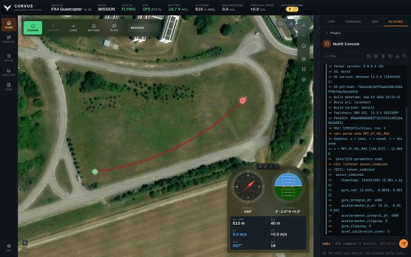
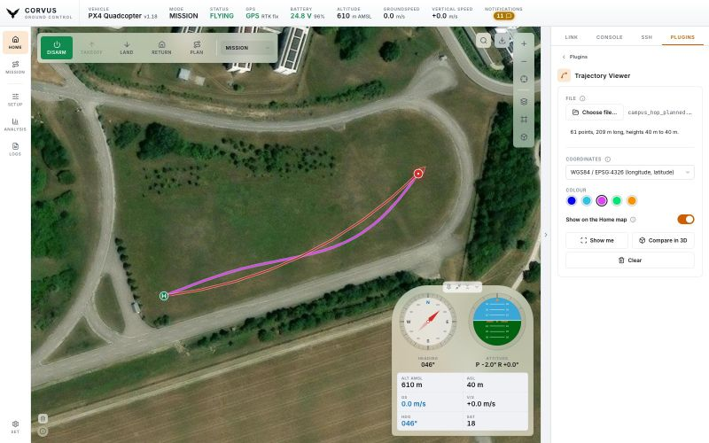

Tools
Plugins
The PLUGINS tab in the side workspace is an extension point. A plugin adds its own view there without a fork and without touching the rest of the app, settings of its own, and, when you allow it, a tab of its own. Four ship with Corvus, and your own is a Rust crate built in beside them.

Vibration Monitor
A live graph of gyro coning, gyro high frequency and accelerometer high
frequency vibration, with the cumulative clipping counters beside it. While
it is open it asks the autopilot to send VIBRATION more often,
and puts the default rate back when you close it.
SSH Launcher
A shelf of buttons for the programs you start before a flight. Each button carries its own saved SSH connection, folder and command, so the mission script, the video pipeline and the log recorder are three presses rather than three trips to a terminal. Add, rename, edit and remove buttons in the plugin itself; they are saved and there again at the next launch.

How a button runs its program
- In its own SSH session. Pressing the button again runs the program again in that same terminal: one run under the last, in one scrollback, with nothing thrown away in between. (It is a real shell: if the last program is still running in the foreground, what you send goes to it, just as if you had typed it. Press Ctrl+C first, or let it finish.)
- The arrow beside a button opens that session's terminal, a window you can move, resize, maximise and put away. Only the arrow opens it: pressing the button starts the program without throwing a window at you, which matters when four of them go up on the pad. Pressed before the button, the arrow opens the terminal on a plain shell, and the button then runs the program in it.
- Closing the window with × leaves the program running, and the arrow brings the window back with its scrollback intact.
- A green dot marks buttons that have something running. On those rows the pencil becomes a red stop button: it sends Ctrl+C, gives the program a second to finish, then closes the session, which ends the program and the connection. Stop a button before editing it.
- The grip at the left of each row appears once the pencil at the bottom of the card is switched on. Drag it up or down to move the button, or focus it and press ↑ or ↓. The new order is saved at once.
- The colour of a button is set in its editor: the first chip is the default, which follows the theme, then a few preset colours, and the last chip opens a picker for any other. The label switches between white and black so it stays readable.
Turn Run in a terminal off for a program that has to outlive
Corvus itself. It is then started with nohup and detached, with
nothing to watch and nothing to stop from here.
Connections
A button does not need a connection set up beforehand. The connection list in
its editor ends with New connection…, which asks for host,
user, password and key file right there, so a shelf can be built on the pad
for a companion computer Corvus has never seen. What you type is saved as an
ordinary SSH connection (it appears in the SSH tab, ready for the next button,
editable and removable), named user@host unless you name it.
The plugin never holds a password. A button names a saved SSH connection, and the backend takes the credentials from there.
Schwalby
A shelf of one press buttons like the SSH Launcher's, for programs on the ground station as well as on the aircraft. When you create a button, the Local / SSH switch at the top of its settings decides where it runs:

- Local
- Runs the command on this computer, as you, in your own login shell. In a terminal it gets a window of its own like any other (arrow, pin, disconnect, Ctrl+C, and the stop button on its row); in the background it starts without one. Either way it is stopped when Corvus closes, so nothing is left running after you shut down. Only this computer can start anything locally, even when Corvus is reachable from the network. On Windows a local terminal is not available and the switch says so; local background buttons work there too.
- SSH
- Runs it on a saved SSH connection, exactly as an SSH Launcher button does, including New connection… and the
nohupbackground mode.
Each row says where it runs. Moving a running button to the other side (or to another connection) asks first and closes its old session, so the next press can never land on the wrong machine. Schwalby and the SSH Launcher are separate plugins with their own buttons and settings; neither touches the other's.
Schwalby can have a tab of its own. Switch on Own tab in its settings (the gear beside it in Settings, Plugins) and its shelf is the SCHWALBY tab, one press from anywhere, instead of a card under PLUGINS.
An AI client connected through the MCP server can use the shelf too, when you allow it twice: Plugin tools under Settings, Connections, MCP, and one or both of Schwalby's own switches in its gear:
- AI clients may add buttons
- The client can add buttons that run on this computer, and change or remove the ones it added. It can never add a button that runs over SSH, and never change one of yours. A button it added carries an AI mark. A new one, or one whose command it changed, is drawn dashed and does not run: press it, read the command it would run, and choose Allow. Saving it in its editor allows it too.
- AI clients may press buttons
- The client can press any allowed button, yours included, which runs its program exactly as your own press would. With the shelf closed the press takes the same path, so opening Schwalby afterwards shows it running.
Map Entities
A tactical layer for the Home map. You place things by hand, at an exact coordinate, and the plugin watches the aircraft against them: trees and gates first, but also people, vehicles, an explosion, a radar or a camera with the area it covers. It is laid out like the Mission planner's side panel: a row of figures, the list of what is on the map, and the editor for the one you picked.

Placing
Pick a kind under Place, then click the map. It keeps going,
so a row of trees is a row of clicks. Esc, a right click or
Done stops. A gate takes two clicks, one for each post.
Whatever you place is selected, and only the selected entity can be dragged,
so a stray drag never moves the others. For an exact position, type the
latitude and longitude in the editor (a pasted 48.1234, 11.5678
fills both), or press the crosshair beside them and click the map once. The
entities are saved as you change them and come back on the map when Corvus
starts. The bin on a row deletes at once; Undo appears for a
few seconds and puts it back where it was.
- Gate
- Two posts and the opening between them. Opening from and Opening height are metres above the takeoff point, the way the aircraft's own altitude is read. The editor shows the width and the heading of the line.
- Tree
- A position, a crown radius and a height. The crown is drawn as a light area under the tree's mark.
- Radar, camera, antenna, explosion, fire
- A mark with a radius, drawn as a dashed, lightly filled circle: a radar's reach, the area a camera sees, a blast's danger zone. Set the radius to 0 for none. Set Angle below 360 for a sector instead of a full circle, a camera's field of view or a radar that only looks one way. Direction says where it faces, in degrees with 0 as north, or press the crosshair beside it and click the map to aim it at that point.
- Person, vehicle, building, hazard, target, landing pad, flag
- A mark with a name and a note, and a radius if you want one.
What it checks
While the aircraft is armed, every step of its track is compared with every entity. This is done on the track itself, not on the single positions, so a fast aircraft cannot jump over a gate between two samples.
- A gate is flown through when the track crosses the line between the posts at a height inside the opening. Crossing it above or below the opening is a miss. The line turns green after a pass and amber after a miss, and the editor lists each crossing with its time, height and distance from the centre.
- A tree is hit when the track enters its crown below its height. It turns red.
- Any other entity with a radius counts an entry when the aircraft comes inside it (inside the sector, if it has an angle), and turns amber while it is there.
Passes, misses and entries are shown in the figures at the top and in the list, and, unless you switch it off, announced as a notification. They are kept for the session; Reset results starts again. Carrying the aircraft through a gate on the ground is not a flight, which is why it only counts while armed; the setting Only check while armed in the plugin's settings turns that off. The same settings switch the names on the map and the notifications. Map Entities can have a tab of its own, with Own tab in the same place.
Plugins to install
These two are JavaScript plugins of the old web interface, and the native program does not run them yet. Dropped into the plugin folder they are listed under Settings, Plugins as not loaded. They come back once each is a Rust crate, as described in Adding your own.
Two more plugins are not included with Corvus. Each has a repository of its own:
| Plugin | Repository | Folder |
|---|---|---|
| NuttX Console | corvus-nuttx-console | nuttx-console |
| Trajectory Viewer | corvus-trajectory-viewer | trajectory-viewer |
NuttX Console
Not included with Corvus, and not run by the native program yet. Its repository is corvus-nuttx-console, see Plugins to install.
PX4's own shell: NSH, the NuttShell of NuttX, the operating system PX4 runs
on, reached over the MAVLink link you are already connected with. No cable
to the flight controller, and every builtin is there, also the ones with no
button anywhere: top, listener,
dmesg, free, param,
ver all.


It looks and works like the MAVLink console: the shell's output as lines, your commands in the accent colour, warnings and errors in theirs.
- Type a command and press Enter, or the send button. Up and Down bring back earlier commands, also after a restart. Enter on an empty line asks for a fresh prompt, and ends a running
top. - Ctrl+C in the command line, or the stop button, stops a running program such as
toporlistener. - Filter, pause, copy, save and clear work as in the MAVLink console. Save writes
corvus-nsh_and the time as a.logfile beside the flight logs. - A program that redraws its screen, like
top, replaces its lines instead of adding a screen every second.
The terminal window
The terminal button at the start of the toolbar opens the same shell in a
terminal window, the way the SSH terminals open: in the desktop app a
window of its own, free to go to another
screen, with the pin that keeps it above Corvus; inside the Corvus window
when Settings asks for that. There the prompt is NSH's own
and top redraws in place.
Its title bar follows Corvus title bar in Settings, unless Title bar of the terminal window in the plugin's settings (Settings, Plugins, its gear) says otherwise: System title bar or Corvus title bar for this window alone. An open window changes as soon as the setting does.
- The line is edited here and sent whole when you press Enter, as PX4's own
mavlink_shell.pyand QGroundControl do it, so a slow radio link does not make typing lag. Arrow keys, Home, End and Delete move and edit in the line; Up and Down bring back earlier commands. - Ctrl+C on an empty line stops a running program; on a line you are typing, it drops the line. With text selected, Cmd+C (Ctrl+Shift+C on Windows and Linux) copies it. Ctrl+L clears the screen.
- The circular arrow in the bar ends the shell, and whatever runs in it, and opens a new one.
The console and the window show one shell: what you type in either reaches
it, and what it prints appears in both. It opens when a PX4 autopilot
connects and is closed when the last of the two is closed (a window of its
own included), so a
top left running does not keep the telemetry link busy for
nobody. With nothing connected both say so and the shell opens as soon as
an autopilot is there. On ArduPilot they say Not available on this
autopilot: ArduPilot has no NSH.
The NuttX Console can have a tab of its own, like Schwalby: with Own tab switched on in its settings in Settings, Plugins, it is the NUTTX CONSOLE tab. The MAVLink console's shell commands keep working beside it; whichever sent the last command gets the answer.
Trajectory Viewer
Not included with Corvus, and not run by the native program yet. Its repository is corvus-trajectory-viewer, see Plugins to install.
Draws a trajectory from a file on the Home map: a route someone planned elsewhere, a survey pattern, or yesterday's flight, as a reference to fly against. It is drawn under the flown track, so while the aircraft flies its own path is always the line on top and you see at a glance where it leaves the reference.


The file
Plain text, one point per line, two or three numbers each: x, y and, if you
have it, z. Commas, semicolons, tabs or spaces separate them; a file with
semicolons or tabs may write decimals with a comma (48,07;11,64).
Empty lines, lines starting with #, // or
%, and a header line such as lon,lat,alt are
passed over. A line that is none of these is counted and named, and the
rest of the file is still read. Above 50 000 points the file is thinned
evenly, keeping the first and last point.
# lon, lat, altitude
11.64115,48.07512,20
11.64230,48.07560,25
11.64371,48.07601,30Coordinates
The file does not say what its numbers mean, so you choose:
- WGS84 / EPSG:4326
- Degrees, in the order GIS tools write them: x is longitude, y is latitude (GeoJSON, QGIS, most CSV exports).
- UTM / Projected metres
- Metres, x is easting and y is northing, as surveyors and German geodata portals deliver them. Choose the zone below it: 32N is EPSG:32632 and EPSG:25832 (Munich), 33N is EPSG:32633 (the east of Bavaria). 31N, 34N and 35N are there too. EPSG:25832 and EPSG:32632 differ by under a metre.
- GPS
- Degrees, in the order a GPS receiver or a phone shows them: latitude first, then longitude.
- Local frame
- Metres from the aircraft. The aircraft is 0, 0, 0 and x points the way its nose points. Choose whether y points to its right (FRD, as PX4 has it, with z down) or to its left (FLU, as ROS has it, with z up). The frame is taken from the aircraft's position and heading when you press Anchor at the aircraft (or turn the line on without an anchor), and then stays where it is while the aircraft flies, so the line is a fixed reference. Anchor again to move it to where the aircraft is now.
If the numbers cannot be what you chose (a latitude of 150, say), the plugin says so, and names the other order when the numbers would fit it.
On the map
- Colour: cyan, lime, magenta, blue or white. None of them is the red of the flown track or the amber of a planned route.
- Show on the Home map draws or removes the line. It stays on the map when you close the plugin and comes back after a restart, without opening the plugin, until you switch it off.
- Show me brings the Home map forward and frames the whole trajectory.
- Compare in 3D opens a window with the trajectory and the track the aircraft flew, as two lines in one 3D plot you can turn and zoom, with the largest and the average distance between them. Before anything has been flown it shows the trajectory on its own. The flown track is recorded while the aircraft is armed and kept until Corvus closes; Clear flown track in the window empties it. Heights are measured above each track's own start, because a file does not say what its z is measured from.
- Clear takes the line off the map and forgets the file.
The point count, the length and, when the file has z, the height range are shown under the file name. z does not change the line itself: a line on the map lies on the ground, in 3D as well.
Adding your own
A plugin is a Rust crate that is compiled into Corvus. There is no loader and no script engine, so a plugin works the same on every platform Corvus is built for, and it cannot break the program at run time in a way the compiler did not see. Adding one means building Corvus from a checkout (see Build the apps).
A folder dropped into ~/.corvus/plugins is still listed under
Settings, Plugins, but reads
not loaded: those are the JavaScript plugins of the old web
interface, and the native program does not run them.
Folder layout
src/plugins/
my-plugin/
Cargo.toml
src/lib.rs
lang/de.json (optional, see Translations below)
The folder name is the plugin's id and the name of the folder its settings
are kept in, so it must be a safe name (letters, digits, _,
. and -). The crate is called
corvus_plugin_<id>, with dashes as underscores, and
depends on corvus_api and on nothing inside the program: copy
the Cargo.toml of one of the four that ship.
Then add it to the root Cargo.toml in two places:
[workspace]
members = [..., "src/plugins/my-plugin"]
default-members = [..., "src/plugins/my-plugin"]
[dependencies]
corvus_plugin_my_plugin = { path = "src/plugins/my-plugin" }
The build finds every folder in src/plugins with a
Cargo.toml and fails, naming the missing line, when one is not
in [dependencies], so a plugin never goes missing silently.
The plugin
A plugin is a type behind the Plugin trait of
corvus_api. Only info and show are
required:
use corvus_api::plugin::{Host, Info, Plugin};
use corvus_api::ui::style::{self, Weight};
use eframe::egui;
#[derive(Default)]
pub struct Hello;
impl Plugin for Hello {
fn info(&self) -> Info {
Info { id: "my-plugin", name: "My Plugin", icon: "puzzle",
description: "What it does, one line.", version: "1.0.0",
order: 100, can_tab: false }
}
fn show(&mut self, ui: &mut egui::Ui, area: egui::Rect, _h: &mut Host) -> f32 {
let g = style::galley(ui, "Hello", 13.0, Weight::W600, style::text_1(), 0.0);
ui.painter().galley(area.min, g.clone(), style::text_1());
g.size().y
}
}
pub const LANG: &[(&str, &str)] = &[("de", include_str!("../lang/de.json"))];
pub fn plugin() -> Box<dyn Plugin> {
Box::new(Hello)
}Info | Meaning |
|---|---|
id | The plugin's identity, the same as its folder name. |
name | The title on its card. |
icon | Any Lucide icon name. |
description | One line under the title. |
version | Your plugin's own version. |
order | Where the card sits in the grid, lower first; ties are broken by name. |
can_tab | Whether it may have a tab of its own; see below. |
The rest of the trait is optional:
| Method | When it runs |
|---|---|
start | Once per session, as soon as the saved settings are known, whether or not the plugin is ever opened: to put a saved line back on the map. |
tick | Every frame, open or not. The live telemetry is h.state. |
open, close | The view is about to be shown, and is gone. Leave nothing behind in close. |
show | Draws the view into area, from its top, and returns the height used. The area scrolls. |
options, options_changed | The plugin's settings, and a change to one of them. |
map_event | The pointer clicked or dragged one of the plugin's shapes, or picked the point it asked for. |
mcp_tools, mcp_call, mcp_take | Tools for an AI client; see below. |
The Host a method is handed is how a plugin talks to Corvus:
h.map() draws on the Home map, h.settings() and
h.save_settings() read and keep its own state,
h.get and h.post call the backend on a thread of
their own (poll the returned reply in a later frame),
h.notify shows a toast and a line on the notification board,
h.console writes to the MAVLink console, h.terminal
opens a terminal window on a saved SSH connection, h.fit frames
points on the map and h.pick_point waits for a click on it.
Build the view from the widgets in corvus_api::ui, so a plugin
looks like the rest of the app.
Plugin tabs
A plugin whose Info says can_tab: true gets an
Own tab switch in its settings in
Settings, Plugins. On, the plugin has a
tab in the side panel, captioned with its name and placed before PLUGINS.
Off (the default), it is a card like any other, so a plugin must work in
both. PLUGINS stays the last tab.
Plugin settings
A plugin whose options lists anything gets a gear beside its
version in Settings, Plugins. The gear
opens a dialog with one control per option, drawn by Corvus so every
plugin's settings look alike. A change is in force and saved at once.
fn options(&self) -> Vec<OptionSpec> {
vec![OptionSpec::toggle("labels", "Show labels", true)]
}
fn options_changed(&mut self, h: &mut Host) {
let labels = h.options().get("labels").and_then(|v| v.as_bool()).unwrap_or(true);
// follow the new value
}
The types are toggle, select, text
and number. The options are the operator's: a plugin reads them
and never writes them.
Drawing on the map
h.map() draws lines, areas, circles, text, buttons and markers
on the Home map, flat and 3D. Each shape has a key of the plugin's own, and
drawing the same key again replaces it, so a moving thing is drawn again
each time it moves. Lines and areas lie under the flown track. Markers and
buttons answer the pointer on the flat map (map_event); in 3D
they are drawn, not clickable.
Tools for an AI client
A plugin offers tools to an AI client with
mcp_tools, runs a call in mcp_call and hands the
answer back from mcp_take once it has one, which may take a few
frames. A tool exists only while a Corvus window is open, because the
plugin runs there. The operator still decides: the client sees a plugin's
tools only with Plugin tools on and that plugin's switch on
under Settings, Connections, MCP, and with Ask me first on
each call waits for them. Schwalby is the shipped plugin that offers tools.
Translations
A plugin brings its own translations: one file per language in a
lang folder inside its folder, named after the language code
(lang/de.json, lang/fr.json), and listed in its
LANG so they are compiled in. The format is the one the
interface languages use, with the English text as the key and
meta left out, because the language itself is named by the main
file:
{
"strings": {
"Live vibration": "Live-Vibration",
"Settings of {name}": "Einstellungen von {name}"
}
}
When a language is loaded, Corvus merges the files of every plugin into it. If
the main language file and a plugin both translate the same English text, the
main file wins, so a plugin cannot change what the application itself says.
corvus-build i18n check reads the plugin files too.
Tests
A plugin keeps its tests in its own crate, as Rust tests:
cargo test --workspace runs them with the rest of Corvus, and
they stay out of the application when it is built. Keep the rules in a
module without egui in it, so they can be tested without a
window, as the shipped plugins do.
A plugin's settings are kept in its own file,
~/.corvus/plugins/<id>/config.json, not in the main
config. The shipped plugins are complete worked examples. Copy one and start
from there:
src/plugins/ssh-launcher: a form, saved settings and a backend call.src/plugins/schwalby: the same, with a control and tools for an AI client.src/plugins/vibration: a live chart on the telemetry stream.src/plugins/map-entities: placing things on the map by clicking, markers that can be dragged, and watching the aircraft's track against them.
A plugin is code compiled into the program, and the launchers run whatever command you give them as the account you point them at. Read a plugin before you build it in, exactly as you would a script you were about to run yourself.
Taking a plugin to another station
A plugin's code is part of Corvus, so the other station has it when it runs the same build. Its settings travel with Settings, Export and import, Export settings.